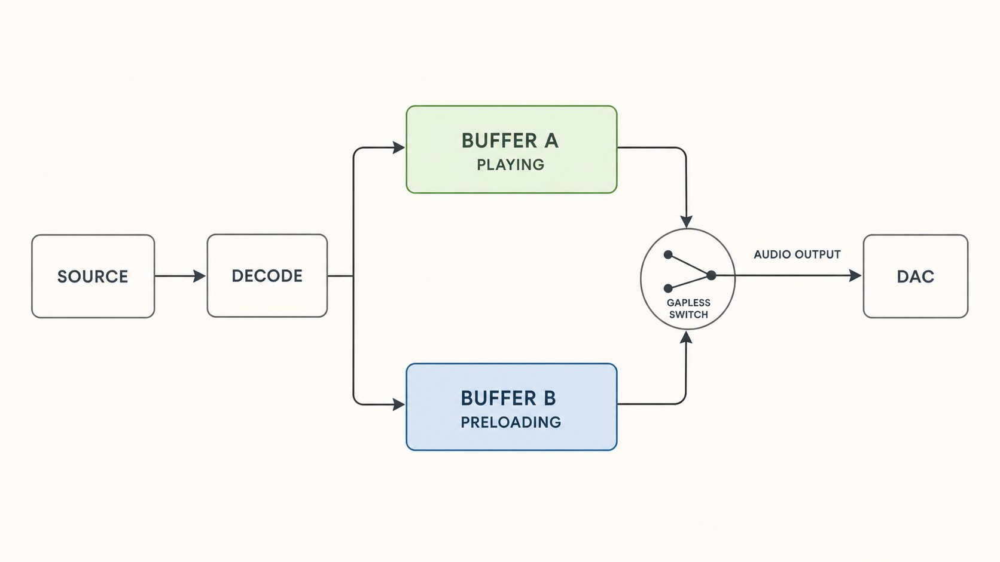

Audio Lounge Blog
Notes from
a music collector.
Product stories, playback engineering, and the thinking behind Audio Lounge.

Memory Playback in Audio Lounge 1.1.1
Inside the rewritten, memory-buffered engine that separates storage and network activity from continuous DAC output.
Read →
HALO, Roon, UPnP, HQPlayer and Diretta
Five network-audio architectures, five priorities—and why HALO belongs directly inside Audio Lounge.
Read →
Introducing Audio Lounge 1.1
Why SMB Direct, HALO, and Audio Lounge Air belong together—and why 1.1 is really about removing infrastructure from the listening experience.
Read →
Why I Built HALO
UPnP, Roon, Diretta and NAA all influenced the question. HALO is the narrower answer Audio Lounge needed.
Read →A Lifetime of Collecting Music
A personal story about more than three decades of collecting music.
Read the story →